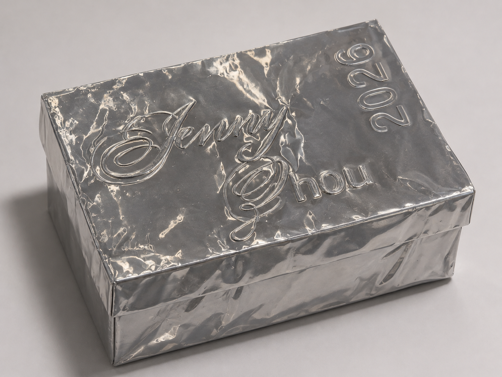
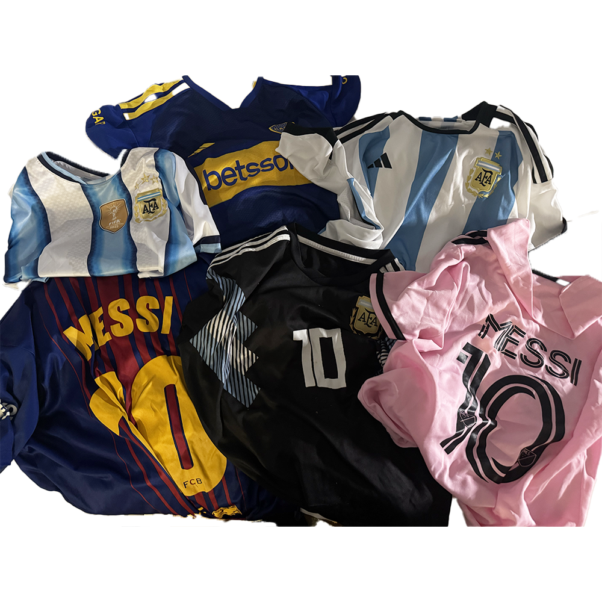
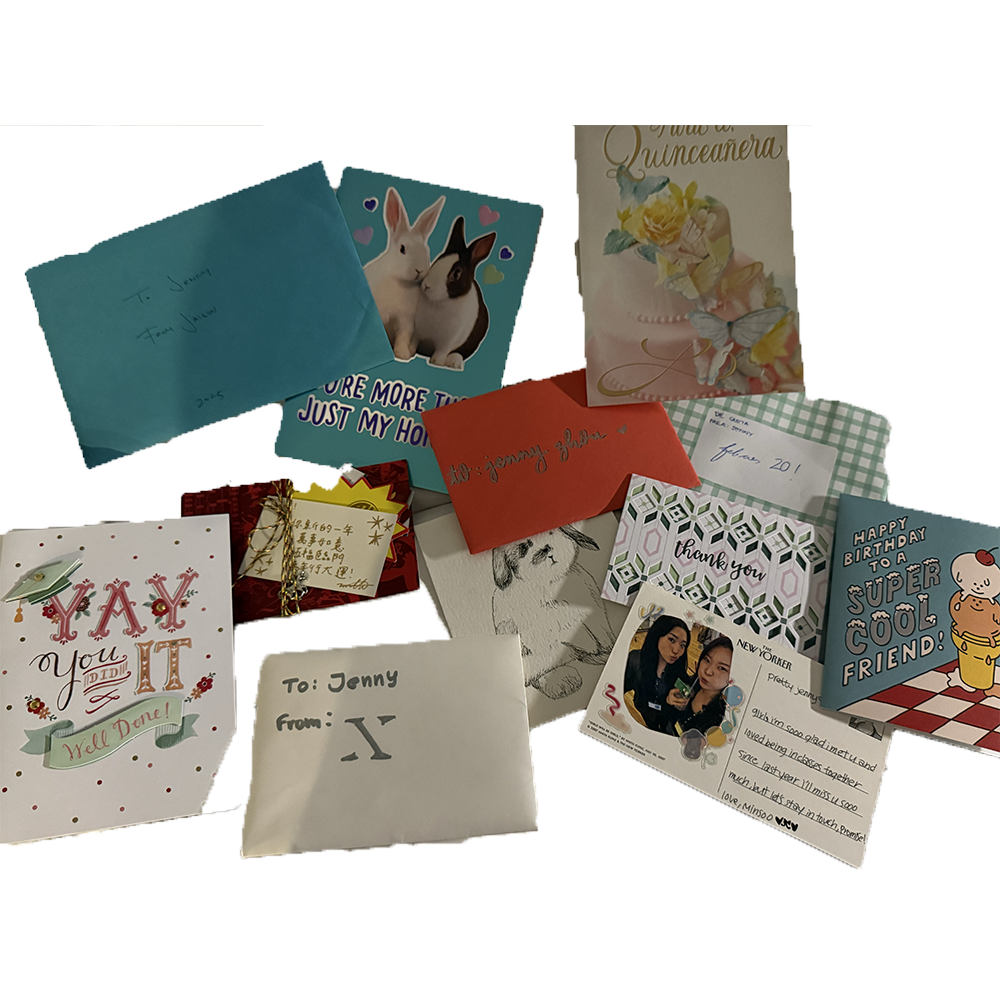
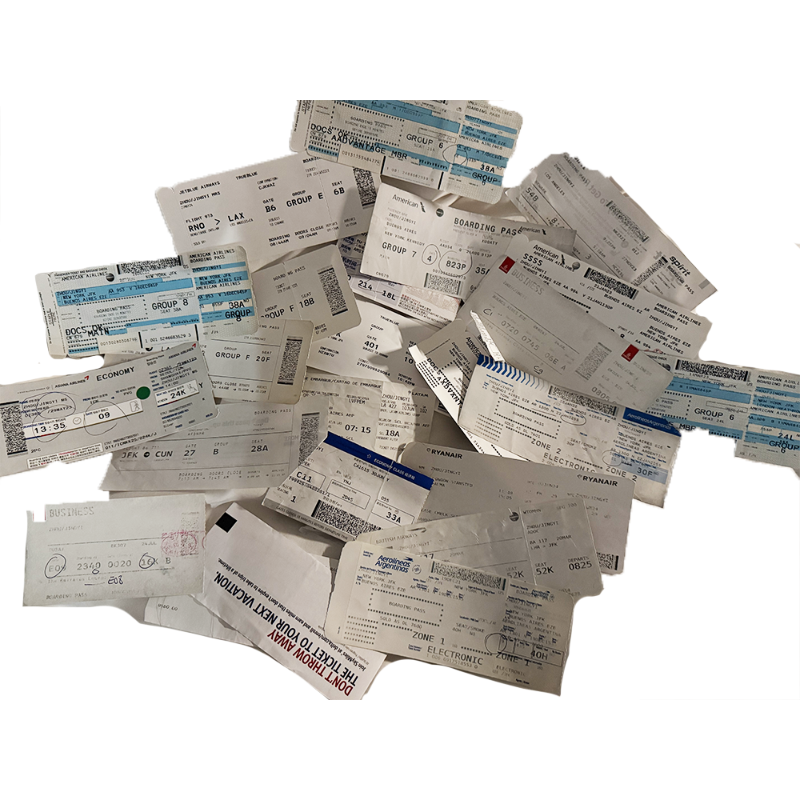
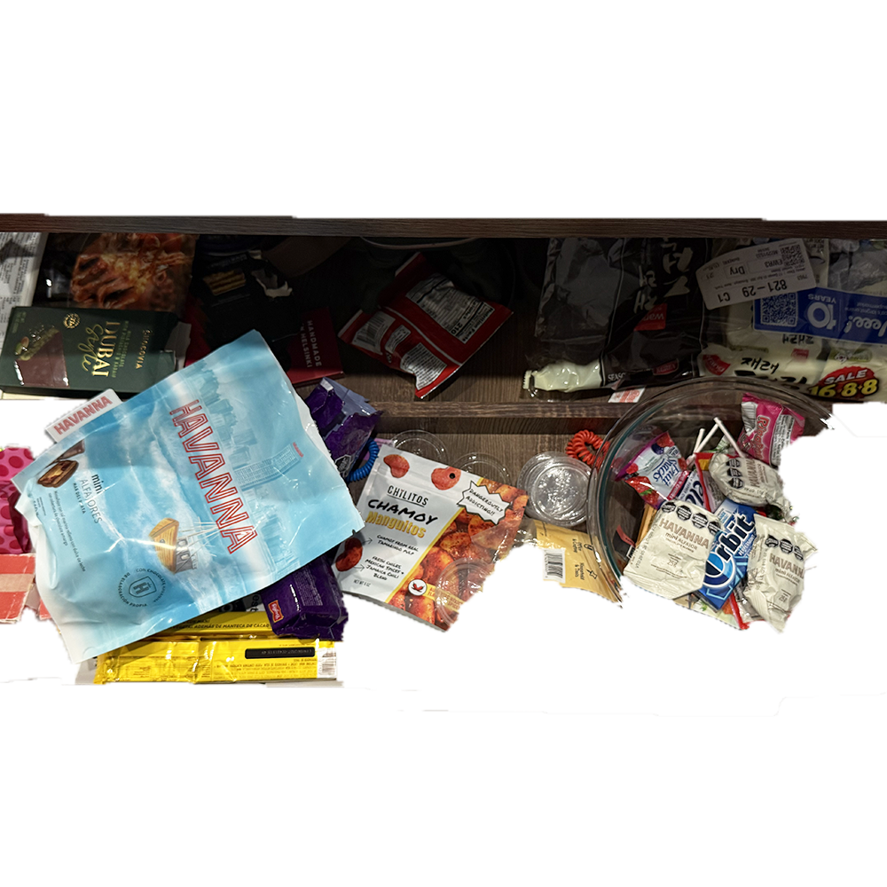
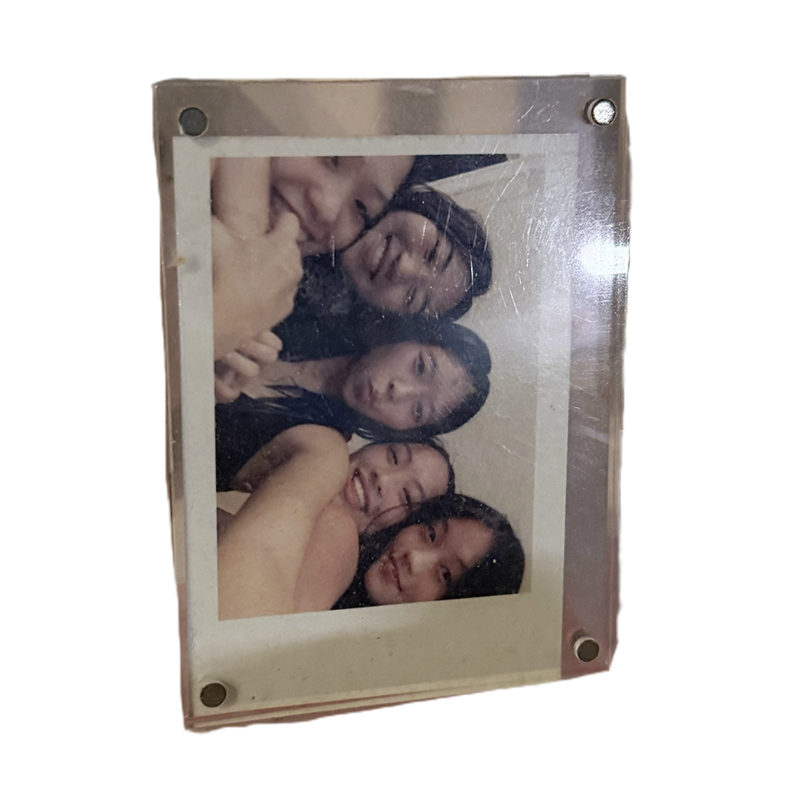

Container, 0262.00. Sheet metal over cardboard, embossed “Jenny Zhou 2026.” Recovered in New York, 2250.
Exhibition
The personal collection of an unfamiliar individual, recovered from a residential building in New York.
In the spring of 2250, a survey team clearing a flooded basement in lower Brooklyn recovered a metal-wrapped container.
Inside were five groups of objects. The container only had a name and year inscripted. This exhibition presents each group with the museum’s current reading, and follows how that reading of the owner takes shape.
The collection suggests an individual of considerable socioeconomic privilege, with access to frequent international travel during a period when unrestricted global mobility was still possible. Zhou's belongings suggest an extensive international network, likely maintained for professional, commercial, or diplomatic purposes. The preservation of sporting merchandise, commercial packaging, and personal photographs suggests an interest in collecting cultural artifacts from visited regions. While the precise nature of these relationships remains undetermined, the collection showcases the lifestyle of a multicultural individual living based in New York in 2023.
Records reviewed: 0 of 5

Six garments in team colors, several printed with the same surname and the number 10. Likely memorabilia devoted to a single athlete.
Wear patterns indicate regular use, which is inconsistent with display. Garments from rival clubs are kept together.

Personal correspondence from different handwritings and at least three languages, kept together. Handwriting is now a specialist skill and transcription is ongoing.
Most items are addressed to the same recipient, “Jenny.” No institutional letterhead is present.

A high number of long-distance flights over many years, suggesting considerable means.
Routes repeat mostly between New York and Buenos Aires. No work or official purpose is recorded.

Packaging from at least two regions, probably retained as souvenirs.
The reasons for preserving several low-value and toxic ingredient objects remain undetermined.

A group of five similarly aged individuals, possibly associated through education or an organization.
No institutional affiliation or family relationship can be established.
No records have been reviewed yet. Open the exhibition objects to begin the reconstruction.
The reasons for preserving several low-value objects remain undetermined.